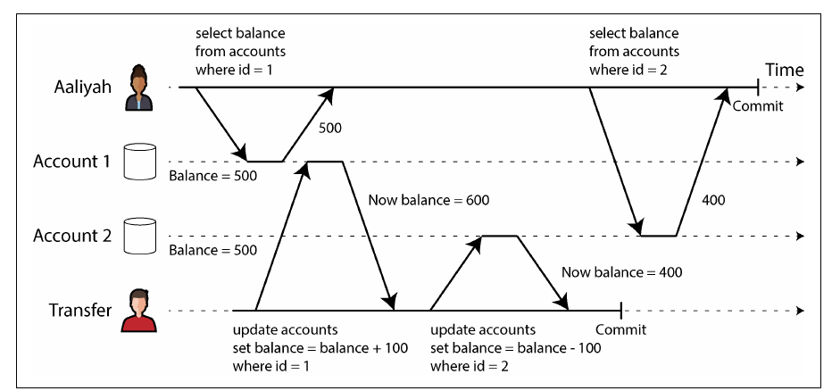
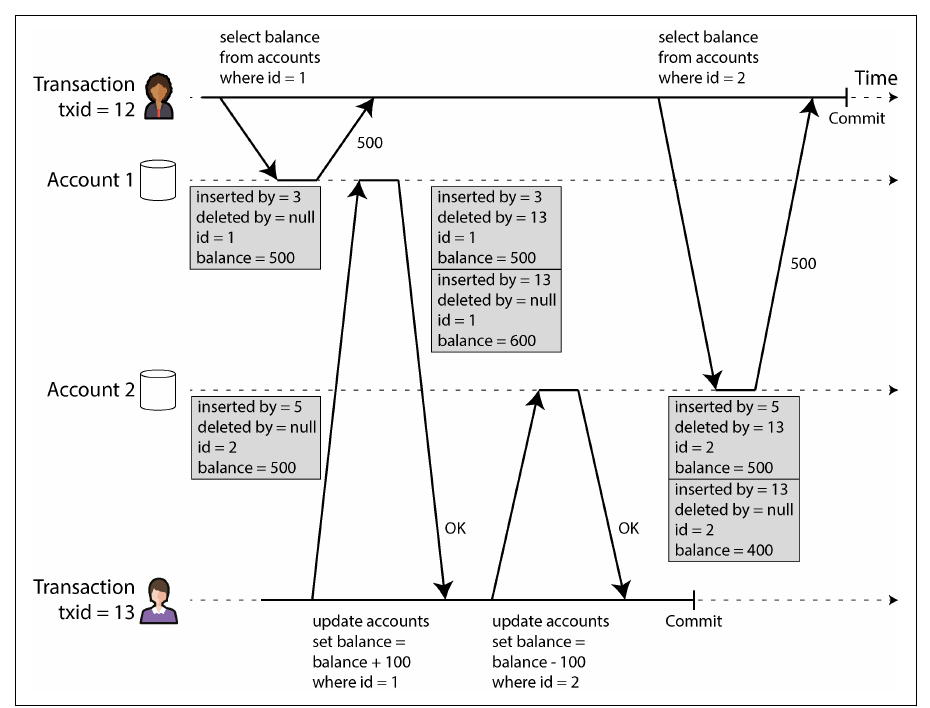
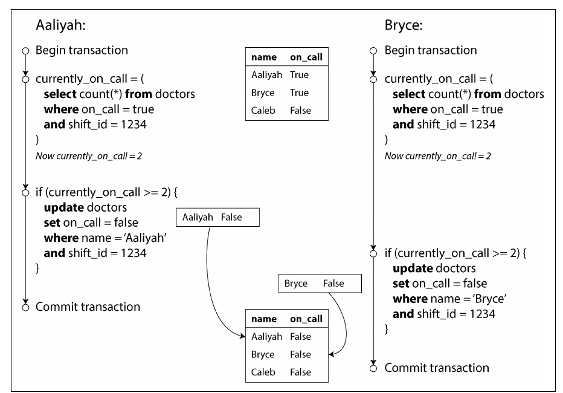
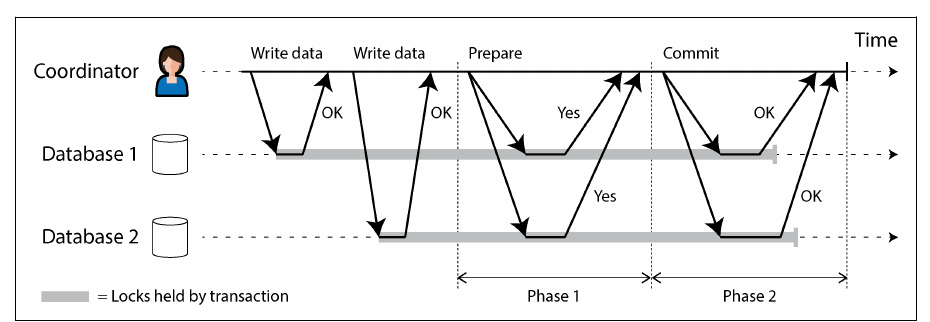
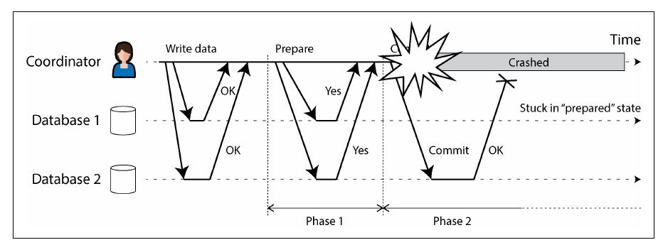

Chapter 8 · pp. 277–344
Transactions
Designing Data-Intensive Applications, 2nd Edition
A transaction groups several reads and writes into one logical unit that either commits or aborts, letting the application pretend that certain concurrency problems and faults don't exist. The chapter unpacks what ACID really guarantees, why multi-object transactions matter, and then goes deep into isolation: the race conditions that weak isolation levels allow (dirty reads and writes, read skew, lost updates, write skew, phantoms), how read committed and snapshot isolation (MVCC) are implemented, and three ways to achieve full serializability — actual serial execution, two-phase locking, and serializable snapshot isolation. It ends with distributed transactions: two-phase commit, its problems across heterogeneous systems (XA), its better behaviour inside one database, and exactly-once message processing.
The chapter’s own outline (from the book’s table of contents)
- What Exactly Is a Transaction? — p. 278
- The Meaning of ACID — p. 279
- Single-Object and Multi-Object Operations — p. 284
- Weak Isolation Levels — p. 288
- Read Committed — p. 290
- Snapshot Isolation and Repeatable Read — p. 293
- Preventing Lost Updates — p. 299
- Write Skew and Phantoms — p. 303
- Serializability — p. 308
- Actual Serial Execution — p. 309
- Two-Phase Locking — p. 313
- Serializable Snapshot Isolation — p. 317
- Distributed Transactions — p. 323
- Two-Phase Commit — p. 324
- Distributed Transactions Across Different Systems — p. 328
- Database-Internal Distributed Transactions — p. 333
- Exactly-Once Message Processing Revisited — p. 334
- Summary — p. 335
From the book
Introduction
Databases and applications crash mid-operation, networks cut off clients, clients overwrite each other and read half-updated data — and race conditions cause surprising bugs. A transaction groups reads and writes into one logical unit that either commits or aborts (rolls back), so the application can simply retry. Transactions aren’t a law of nature: they exist to simplify the programming model by providing safety guarantees. The book suggests the Post Office Horizon scandal was probably caused by a lack of ACID transactions (pp. 277–278).
From the book
What exactly is a transaction?
Almost every relational database follows IBM System R (1975) — MySQL, PostgreSQL, Oracle and SQL Server are “uncannily similar” to it. NoSQL databases of the late 2000s abandoned or watered down transactions, spreading the belief they don’t scale; NewSQL systems — CockroachDB, TiDB, Spanner, FoundationDB, YugabyteDB — disproved it by combining sharding with consensus (pp. 278–279).
What exactly is a transaction?
The meaning of ACID
pp. 279–284Coined in 1983 by Härder and Reuter; today “ACID compliant” is mostly marketing. BASE (basically available, soft state, eventual consistency) is vaguer still — essentially “not ACID” (p. 279).
| Letter | Means | Not to be confused with |
|---|---|---|
| Atomicity | On a fault mid-transaction (crash, network, full disk, constraint violation), all its writes are discarded, so it can be safely retried — abortability | Atomic operations in multithreaded code (that is isolation) |
| Consistency | Application invariants (credits and debits balance) hold before and after; the database can enforce some as constraints (foreign key, unique, check; triggers, materialized views) | Replica consistency, consistent snapshots, consistent hashing, CAP’s linearizability — “at least five meanings” |
| Isolation | Concurrent transactions don’t step on each other — formally serializability (Figure 8-1: two increments from 42 must give 44, not 43) | Oracle’s “serializable”, which is really snapshot isolation |
| Durability | Committed data isn’t forgotten — non-volatile storage, fsync, WAL, checksums; or replication to enough nodes | A guarantee: perfect durability doesn’t exist |
Replication and durability (pp. 283–284) — every technique has holes:
- A dead machine’s disk keeps data but makes it unreachable; replicated systems stay available.
- Correlated faults (power, a bug triggered by one input) can wipe out all in-memory replicas at once — so disk still matters.
- Asynchronous replication loses recent writes on leader failure.
- SSDs can violate guarantees on power loss;
fsyncis hard to use (PostgreSQL got it wrong for 20+ years); firmware bugs (drives dying at 32,768 hours); filesystem interaction bugs that spread between replicas. - Silent corruption may also reach replicas and recent backups.
- 30–80% of SSDs develop a bad block in their first four years; worn SSDs can lose data within weeks to months when unpowered.
Use disk writes, remote replicas and backups together.
What exactly is a transaction?
Single-object and multi-object operations
pp. 284–288The email example (Figures 8-2, 8-3): inserting a message and incrementing a denormalized unread counter. Isolation means user 2 sees both or neither (else a dirty read); atomicity means a failed counter update rolls back the insert. Relational databases group a transaction by TCP connection between BEGIN and COMMIT; many NoSQL multi-put APIs are not transactional (pp. 284–286).
- Single-object writes: a 20 kB JSON write must not be stored half-sent, spliced with the old value, or read half-done — engines use a log (atomicity) and per-object locks (isolation). Atomic increments and conditional writes (compare-and-set) prevent lost updates on one object but aren’t transactions; Aerospike’s strong consistency and Cassandra/ScyllaDB’s lightweight transactions give single-object linearizable operations only (p. 286).
- Multi-object transactions are needed for foreign-key references and graph edges, denormalized documents, and secondary indexes (a record may otherwise appear in one index but not another) (p. 287).
Handling errors and aborts (pp. 287–288): leaderless stores work “best effort”; ORMs like ActiveRecord and Django don’t retry aborted transactions, throwing away user input. Retrying isn’t perfect:
| Pitfall | Mitigation |
|---|---|
| Commit succeeded but the ack was lost → retry runs it twice | Application-level deduplication |
| Abort was due to overload or contention → retry worsens it | Limit retries, exponential backoff, treat overload errors differently |
| Permanent errors (constraint violation) | Retry only transient errors (deadlock, isolation violation, network, failover) |
| Side effects outside the database (emails) | Two-phase commit, or idempotence |
| Client crashes while retrying | Its data is lost |
From the book
Weak isolation levels
Concurrency bugs appear only with unlucky timing — hard to test or reproduce — and attackers can trigger them deliberately with bursts of concurrent requests. Weak isolation has lost real money (even bankrupted a Bitcoin exchange), drawn auditors and corrupted customer data; “use an ACID database” misses the point, since popular relational databases default to weak isolation too. (Much banking runs on text files over SFTP, where audit trails matter more than ACID.) (pp. 288–289)
Table 8-1 (p. 335): which anomalies each level allows.
| Isolation level | Dirty reads | Read skew | Phantom reads | Lost updates | Write skew |
|---|---|---|---|---|---|
| Read uncommitted | ✗ possible | ✗ possible | ✗ possible | ✗ possible | ✗ possible |
| Read committed | ✓ prevented | ✗ possible | ✗ possible | ✗ possible | ✗ possible |
| Snapshot isolation | ✓ prevented | ✓ prevented | ✓ prevented | ? depends | ✗ possible |
| Serializable | ✓ prevented | ✓ prevented | ✓ prevented | ✓ prevented | ✓ prevented |
Dirty writes are prevented by almost every implementation, so the table omits them (p. 336).
Weak isolation levels
Read committed
pp. 290–293Default in Oracle, PostgreSQL, SQL Server and others. Two guarantees:
- No dirty reads — writes become visible only on commit, all at once (Figure 8-4). Otherwise others see partial updates, or data later rolled back (forcing cascading aborts).
- No dirty writes — you overwrite only committed data. Prevents Figure 8-5’s mix-up: Bryce wins the car listing while the invoice goes to Aaliyah. It does not stop the counter race of Figure 8-1.
Implementation: row-level write locks held until commit; for reads, remember the old committed value and serve it while a write is pending — read locks would let one long write stall many readers (still used by Db2 and SQL Server with read_committed_snapshot=off). Read uncommitted prevents only dirty writes (pp. 292–293).
Weak isolation levels
Snapshot isolation and repeatable read
pp. 293–299Read skew (a nonrepeatable read): Aaliyah has $500 in each of two accounts; a $100 transfer runs between her two reads and she sees $500 + $400 = $900 (Figure 8-6). Harmless on refresh, but intolerable for backups (inconsistencies become permanent on restore) and analytical queries or integrity checks (pp. 293–294).


Snapshot isolation lets each transaction read a consistent snapshot as of its start — supported by PostgreSQL, MySQL/InnoDB, Oracle, SQL Server; the highest level in Oracle, TiDB and Aurora DSQL; common in BigQuery (p. 295). Writers still take write locks, but readers never block writers, and writers never block readers (p. 295).
MVCC (multiversion concurrency control), as in PostgreSQL (Figure 8-7): each transaction gets an increasing txid (32-bit in PostgreSQL, so vacuum guards against wraparound). Each row version has inserted_by and deleted_by; an update is a delete plus an insert (txid 13 turns account 2’s $500 row into a deleted $500 row and a new $400 row); garbage collection removes versions nobody can see (pp. 295–297).


flowchart TB
Q{"Is this row version visible<br/>to my transaction?"} --> A["Its inserting transaction had<br/>committed when I started?"]
A -- no --> INV[Invisible]
A -- yes --> B["Not deleted — or its deleting transaction<br/>had not committed when I started?"]
B -- no --> INV
B -- yes --> VIS[Visible]The visibility rules of p. 297: ignore writes by transactions in progress at my start, by later transactions, and by aborted ones.
- Indexes point at one version and follow version chains; PostgreSQL avoids index updates when versions share a page; some systems store deltas (p. 298).
- Immutable (copy-on-write) B-trees — CouchDB, Datomic, LMDB — create a new root per write; each root is a snapshot (p. 298).
- Naming chaos (pp. 298–299): snapshot isolation is “repeatable read” in PostgreSQL and “serializable” in Oracle; MySQL’s “repeatable read” is weaker than snapshot isolation; Db2’s “repeatable read” is serializability. The SQL standard follows System R’s 1975 definitions, predating snapshot isolation, and is ambiguous — “nobody really knows what repeatable read isolation means.”
Weak isolation levels
Preventing lost updates
pp. 299–303Two concurrent read-modify-write cycles: the later write clobbers the earlier — counters and balances, editing a JSON list, two people saving a whole wiki page.
| Remedy | Example | Caveats |
|---|---|---|
| Atomic write operations | UPDATE counters SET value = value + 1 WHERE key = 'foo'; MongoDB document ops; Redis structures | Best where expressible; ORMs make unsafe read-modify-write easy |
| Explicit locking | SELECT … FOR UPDATE on the game piece being moved (Example 8-1) | Easy to forget; deadlocks (detected, one transaction aborted) |
| Automatic detection | Abort and retry the loser — PostgreSQL repeatable read, Oracle serializable, SQL Server snapshot | Not MySQL/InnoDB repeatable read — so arguably not snapshot isolation; needs app retries |
| Conditional write (CAS) | UPDATE … WHERE id = 1234 AND content = 'old content'; version column = optimistic locking | Under MVCC, the WHERE must see others’ newer writes (many implementations make that exception) |
| Replicated databases | Siblings merged after the fact; commutative ops (increments, set adds) — CRDTs | Locks and CAS assume one up-to-date copy; LWW loses updates |
Weak isolation levels
Write skew and phantoms
pp. 303–308Aaliyah and Bryce are the two on-call doctors; both feel unwell and click “go off call” together. Each transaction checks “≥ 2 on call?” on its snapshot, sees 2, and removes its own record — both commit, and nobody is on call (Figure 8-8). This is write skew: two transactions read the same objects and update different ones — a generalization of lost updates. Atomic single-object ops and automatic lost-update detection don’t help (PostgreSQL RR, InnoDB RR, Oracle serializable and SQL Server snapshot all miss it); multi-object constraints are rarely supported; the fallback is SELECT … FOR UPDATE on the rows the decision depends on (pp. 303–305).


More examples (pp. 305–306): meeting-room double booking (Example 8-2); a multiplayer game moving two pieces onto one square; claiming a username (a unique constraint fixes it); double-spending points or money.
flowchart LR
S1["1 · SELECT checks a condition<br/>(≥ 2 doctors? no overlapping booking?)"] --> S2["2 · App decides<br/>based on the result"] --> S3["3 · INSERT / UPDATE / DELETE<br/>changes that very condition"]
S3 -. "a concurrent transaction’s step 1<br/>no longer holds — write skew" .-> S1When step 1 checks for the absence of rows, FOR UPDATE has nothing to lock: a write in one transaction changing the result of another’s search is a phantom. Snapshot isolation stops phantoms in read-only queries, not in read-write ones; ORM-generated SQL is prone to it (p. 307). Materializing conflicts — a table of (room, 15-minute slot) rows created in advance purely to be locked — works but is error-prone and leaks concurrency control into the data model: a last resort; prefer serializable isolation (pp. 307–308).
Try it
Isolation levels, one interleaving at a time
Open full screen ↗ · the simulation is the vault’s own model of the mechanism the book describes.
From the book
Serializability
Isolation levels are hard to understand and inconsistently implemented, code rarely reveals whether it is safe at a given level, and there are no good tools to find races. Researchers’ answer since the 1970s: use serializable isolation — the result equals some serial order, so transactions correct in isolation stay correct concurrently (pp. 308–309).
| Actual serial execution | Two-phase locking (2PL) | Serializable snapshot isolation (SSI) | |
|---|---|---|---|
| Philosophy | Extreme pessimism: one “lock” on everything, held very briefly | Pessimistic: wait whenever something might go wrong | Optimistic: proceed; check at commit; abort if not serializable |
| Readers vs writers | No concurrency at all | Readers block writers and vice versa | Neither blocks the other |
| Scales across cores/machines | Only by sharding; cross-shard ~1,000 writes/s in VoltDB | Yes, but contention hurts | Yes — FoundationDB distributes conflict detection |
| Weak spot | One slow transaction stalls everything | Unstable, slow tail latency; frequent deadlocks | High contention → many aborts; long read-write transactions |
| Used in | VoltDB/H-Store, Redis, Datomic | MySQL/InnoDB and SQL Server serializable, Db2 repeatable read | PostgreSQL serializable, SQL Server Hekaton, HyPer, CockroachDB, FoundationDB, BadgerDB |
Serializability
Actual serial execution
pp. 309–313Only in the 2000s did single-threaded execution become viable: RAM is cheap enough to keep the active dataset in memory, and OLTP transactions are short (long analytics run on a snapshot elsewhere). Interactive multi-statement transactions waste the thread waiting on the network (Figure 8-9), so these systems require single statements or stored procedures submitted in advance (pp. 309–310).
| Stored procedures’ bad reputation (pp. 311–312) | Modern answer |
|---|---|
| Vendor languages — PL/SQL, T-SQL, PL/pgSQL — archaic, few libraries | General-purpose languages: Java/Groovy (VoltDB), Java/Clojure (Datomic), Lua (Redis), JavaScript (MongoDB) |
| Hard to debug, version, deploy, test, monitor | — |
| A bad procedure hurts a shared, performance-critical database | — |
| Untrusted tenant code inside the database kernel is a security risk | — |
They also host validation logic behind a GraphQL proxy, and VoltDB replicates by re-running deterministic procedures on each replica (state machine replication) (p. 312). Serial execution needs: small, fast transactions; data in memory; write throughput within one core — or sharding with rare cross-shard transactions (p. 313).
Serializability
Two-phase locking
pp. 313–317For ~30 years the only widely used serializable algorithm (strong strict 2PL, SS2PL). 2PL is not 2PC. Locks are shared (many readers) or exclusive (one writer); a reader can upgrade. Locks are acquired as the transaction runs (growing phase) and all released at its end (shrinking phase) — hence “two-phase”. Deadlocks are detected automatically and one transaction aborted for retry (pp. 313–315).
Performance (pp. 315–316): lock overhead and, above all, reduced concurrency — a whole-table read (backup, analytics) takes a shared lock on the table and blocks all writers for its duration; latencies are unstable and slow at high percentiles; deadlocks are far more frequent, wasting retried work.
Predicate locks lock all objects matching a condition, including ones that don’t exist yet, so they stop phantoms — e.g. bookings of room 123 between noon and 1 pm. Checking many predicate locks is slow, so real systems use index-range (next-key) locks: a coarser approximation attached to an index (all bookings of room 123, or all rooms between noon and 1 pm), falling back to a whole-table lock if no index fits (pp. 316–317).
Serializability
Serializable snapshot isolation
pp. 317–322First described in 2008; full serializability with a small penalty over snapshot isolation. Built on snapshot isolation plus detection of decisions made on an outdated premise (“there are two doctors on call”):
| Case | Detection |
|---|---|
| Stale MVCC read — a write the snapshot ignored has committed by my commit time (Figure 8-10: txn 43 read Aaliyah as on call; txn 42 committed her change) | Track ignored writes; at commit, abort if any committed. Waiting until commit avoids aborting read-only transactions or ones whose “stale” read turns out fine |
| Write affecting a prior read (Figure 8-11) | Record reads on index entries (e.g. shift_id = 1234) or the table; a writer trips these tripwires, notifying readers. First committer wins (42); the other (43) aborts |
Engineering trade-offs (pp. 321–322): fine-grained tracking means fewer needless aborts but more bookkeeping; PostgreSQL proves some reads of overwritten data harmless. No blocking makes latency predictable and read-only queries lock-free; overhead vs plain snapshot isolation is debated. Read-write transactions must be short; long read-only ones are fine.
From the book
Distributed transactions
When a transaction spans shards or a global secondary index, concurrency control is similar (serial on shards, distributed 2PL, distributed SSI checkers) — the new problem is atomic commitment (p. 323). On one node, the moment the commit record hits disk decides everything. Across nodes, sending commit to each independently can leave some committed and others aborted — constraint violations, lost requests, crashes — and a commit can’t be retracted because others may already have read it (Figure 8-12) (pp. 323–324).
Distributed transactions
Two-phase commit
pp. 324–328Used inside databases and exposed to apps as XA (JTA) and WS-AtomicTransaction. A coordinator (transaction manager: Narayana, JOTM, BTM, MSDTC — often a library in the app process) works with participants (p. 325):
- The app gets a globally unique transaction ID from the coordinator.
- It runs single-node transactions on each participant under that ID; anyone may abort at this stage.
- The coordinator sends prepare; any failure or timeout → abort everywhere.
- A participant voting yes has written everything to disk and checked constraints — it gives up the right to abort without committing yet.
- The coordinator decides (commit only if all said yes) and writes the decision to its log — the commit point.
- It sends commit/abort and retries forever; a participant that crashed must commit on recovery.
Two points of no return — a yes vote and the coordinator’s decision — make it atomic; the marriage-ceremony analogy: after “I do” you can’t back out, even if you faint before hearing the pronouncement (pp. 326–327).


Coordinator failure (pp. 327–328): before prepare, participants can abort; after voting yes they are in doubt (uncertain) — a timeout-and-abort could contradict a participant that already committed (Figure 8-14). Only the coordinator’s recovery, reading its log, resolves it (no commit record → abort). If that log is lost, an administrator must decide by hand. 2PC is a blocking protocol; three-phase commit assumes bounded delays and response times, which real systems lack; the practical fix is a consensus-replicated coordinator (Ch. 10).


Try it
Two-phase commit and the in-doubt participant
Open full screen ↗ · the simulation is the vault’s own model of the mechanism the book describes.
Distributed transactions
Distributed transactions across different systems
pp. 328–333Mixed reputation: important safety vs operational pain and performance cost (extra fsyncs and round trips); many cloud services refuse to offer them (pp. 328–329).
| Database-internal | Heterogeneous | |
|---|---|---|
| Participants | Same software — YugabyteDB, TiDB, FoundationDB, Spanner, VoltDB, Cassandra, MySQL NDB | Different vendors or systems (database + message broker) |
| Protocol | Free to optimize | Lowest common denominator: XA |
Exactly-once message processing is the motivating use: acknowledge a message if and only if its database transaction commits — works only if every side effect speaks the same atomic commit protocol (an email server doesn’t) (pp. 329–330).
XA (X/Open, 1991): supported by PostgreSQL, MySQL, Db2, SQL Server, Oracle, ActiveMQ, HornetQ, MSMQ, IBM MQ. It is a C API, not a network protocol; drivers expose prepare/commit/abort callbacks, and the coordinator is usually a library in the application process with its log on local disk (pp. 330–331). Its problems:
- Locks held while in doubt — a 20-minute coordinator restart holds row locks for 20 minutes, forever if the log is lost, blocking large parts of the app (p. 331).
- Orphaned in-doubt transactions survive even database reboots; admins must resolve them under pressure, or use heuristic decisions — a euphemism for probably breaking atomicity (pp. 331–332).
- The coordinator and the application code become single points of failure; participants can talk to the coordinator only through the app (p. 332).
- No cross-system deadlock detection and no SSI (pp. 332–333).
Distributed transactions
Database-internal distributed transactions
pp. 333–334A defining feature of NewSQL (CockroachDB, TiDB, Spanner, FoundationDB, YugabyteDB; Kafka internally too). They use 2PC without XA’s problems by: replicating the coordinator with automatic failover; letting coordinator and shards talk directly; replicating shards; and integrating commit with distributed concurrency control (deadlock detection, consistent cross-shard reads). Consensus replicates both; snapshot isolation and SSI are both available across shards.
Distributed transactions
Exactly-once message processing revisited
pp. 334–335No distributed transaction needed — only a database transaction and message IDs:
flowchart LR
M[Message with unique ID] --> T{"BEGIN; ID already in<br/>processed-IDs table?"}
T -- yes --> ACK1[Acknowledge and drop]
T -- no --> P["Insert ID, process,<br/>write results; COMMIT"] --> ACK2[Acknowledge to broker] --> DEL["Delete the ID<br/>(separate transaction)"]Crash before commit → broker redelivers; after commit but before ack → the retry finds the ID and drops it; after ack but before delete → a harmless leftover ID; concurrent retries → a uniqueness constraint on the ID. Recording the ID makes processing idempotent — the same approach Kafka Streams uses (Ch. 12). Internal distributed transactions still help when IDs and data live on different shards (pp. 334–335).
Recap
Trade-offs at a glance
Anomalies allowed at each isolation level (after Table 8-1, p. 335):
| Isolation level | Dirty reads | Read skew | Phantom reads | Lost updates | Write skew |
|---|---|---|---|---|---|
| Read uncommitted | possible | possible | possible | possible | possible |
| Read committed | prevented | possible | possible | possible | possible |
| Snapshot isolation | prevented | prevented | prevented | depends | possible |
| Serializable | prevented | prevented | prevented | prevented | prevented |
| Serializability via | Approach | Strength | Weakness |
|---|---|---|---|
| Serial execution | One thread, stored procedures | Simple, no locks | Throughput limited to one core per shard |
| 2PL | Pessimistic locks | Decades of practice | Slow, deadlocks, unpredictable latency |
| SSI | Optimistic, check at commit | Readers and writers don't block | Aborts under contention |
Recap
Key takeaways
- ACID's letters are uneven: atomicity is really abortability; consistency is an application property; isolation ideally means serializability but databases often offer less; durability is never absolute (pp. 279–284).
- Weak isolation is common and causes real bugs: read committed prevents dirty reads/writes; snapshot isolation (via MVCC) prevents read skew (pp. 288–299).
- Lost updates need atomic operations, explicit locks (
SELECT … FOR UPDATE), automatic detection, or conditional writes (pp. 299–303). - Write skew — decide on a premise, write somewhere else, premise is now false — is prevented only by serializable isolation (or careful explicit locking / materialized conflicts) (pp. 303–308).
- Three roads to serializability: serial execution on one thread (stored procedures, small fast transactions), 2PL (pessimistic, poor performance and deadlocks), SSI (optimistic, aborts at commit) (pp. 308–323).
- 2PC achieves atomic commit across nodes but blocks if the coordinator fails; XA across different technologies is fragile, whereas database-internal distributed transactions can work well (pp. 323–335).
- Idempotence can give exactly-once semantics without atomic commit across systems (pp. 334–335).
Practice
Check yourself
Questions and answers are the vault's, written from the notes above; answers cite the book's pages.
1Why is atomicity better described as "abortability", and why does that make retries safe — mostly?Show answer
Atomicity means that if a transaction can't complete, all its writes are discarded, so the application can retry. Retries are not entirely safe: the transaction may have committed with only the acknowledgement lost, or failed because of overload, and side effects outside the database are not undone (pp. 280–288).
3Why can snapshot isolation detect a lost update but not write skew?Show answer
A lost update is two transactions writing the same object, which the database can notice. In write skew each transaction writes a different object based on a premise that the other invalidates, so there is no write–write conflict to detect (pp. 299–308).
5A 2PC coordinator crashes after collecting all "yes" votes. What can participants safely do, and why?Show answer
Nothing but wait. Having voted yes, a participant has promised to commit if told to and can't abort or commit on its own, because it doesn't know the coordinator's decision. It stays "in doubt", holding locks, until the coordinator recovers (pp. 324–328).
6How does storing processed message IDs give exactly-once effects without a distributed transaction?Show answer
Record the ID of each processed message in the same database transaction as its effects. If the message is redelivered, the stored ID shows it was already processed and it is skipped (pp. 334–335).
Supplement
Beyond the book
Vault supplement — not from the book.
- Hermitage (github.com/ept/hermitage), maintained by one of the authors, tests which anomalies real databases' isolation levels actually prevent — useful when the name of a level is misleading.
- PostgreSQL's SSI implementation is described in Ports & Grittner, "Serializable Snapshot Isolation in PostgreSQL" (VLDB 2012).
Next steps
Keep going
Run it
Write skew under snapshot isolation and SSI
A small MVCC engine with snapshot reads, first-committer-wins write conflicts, and a simplified serializable-snapshot-isolation check. Replays the book’s on-call doctors example, then 1,000 random interleavings of the same two transactions.
cd books/designing-data-intensive-applications/lab/08-write-skew
python3 mvcc.pyConnections
- Run it: Write skew under SI and SSI.
- Related chapters: 6. Replication (lost updates with replication), 7. Sharding (cross-shard transactions), 10. Consistency and Consensus (atomic commit as consensus, linearizability vs serializability), 13. A Philosophy of Streaming Systems (constraints without distributed transactions).